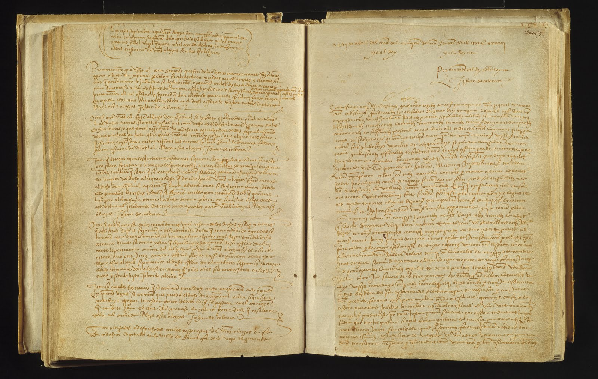
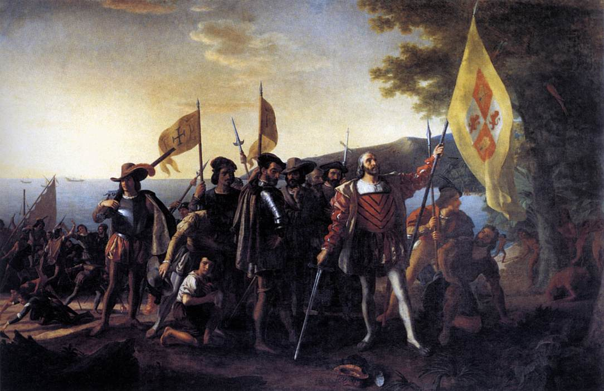

On 2 January 1492, Christopher Columbus was not standing on the deck of a ship. He was at Granada. Before him, one of the longest political chapters in Iberian history was ending. The Nasrid Emirate of Granada—the last independent Muslim state descended from the political world of al-Andalus—had surrendered to Isabella I of Castile and Ferdinand II of Aragon. Muhammad XII, remembered in Spanish history as Boabdil, relinquished his kingdom, and the standards of the Catholic Monarchs rose over the Alhambra.
Columbus later placed himself directly at the scene. In the prologue preserved with the account of his first voyage, he recalled that in that “present year of 1492” he had seen Ferdinand and Isabella bring the war against Granada to its conclusion. Nine months and ten days later, on 12 October, he stood on Guanahani in the Bahamas. Believing that he had approached Asia, he carried the royal standard ashore and claimed the island for those same monarchs.

Granada and Columbus are usually assigned to different chapters: one to al-Andalus, the Nasrids, and medieval Iberia; the other to Atlantic exploration, the Americas, and European overseas empire. Yet only 284 days separated the events, and Columbus witnessed both. Did the fall of al-Andalus actually help him sail?
The answer is yes, but not because Granada's treasure was simply handed to Columbus. His proposal predated the conquest, the war had strained rather than enriched the Crown, and no participant knew that vast continents lay between Europe and Asia. Granada mattered because its fall removed a major military and political commitment when Castile had reason to challenge Portuguese maritime dominance. It did not invent the project; it helped create the circumstances in which that project could leave the page and enter the ocean.
A Proposal Waiting for a Crown
Columbus wanted to reach the trading regions of Asia by sailing west rather than following the Portuguese route around Africa. João II of Portugal rejected the plan. Columbus then presented it to Ferdinand and Isabella in 1486—six years before Granada surrendered and in the middle of the Granada War.
Unlike his theoretical route, Granada was immediate. It had armies, fortresses, sieges, supply lines, taxes, diplomacy, religious significance, and a Muslim state still occupying southern Iberia. Columbus consequently spent years seeking approval.
The chronology is revealing. His proposal existed in 1486; Granada surrendered on 2 January 1492; authorization followed on 17 April; and the expedition sailed on 3 August. A project unresolved for roughly six years became reality within months of the war's end. Chronology alone does not prove causation, but it identifies Granada's clearest contribution: the conquest removed an enormous competing priority.
What Granada Had Been Consuming
The Granada War was not a single winter battle. From 1482 to 1492, Ferdinand and Isabella committed money, manpower, logistics, political attention, and royal energy to reducing the Nasrid kingdom. States possess limited attention as well as limited funds. Courts can sustain only so many military commitments, diplomatic initiatives, officials, and supply networks at once.
Columbus was asking the Crown to sponsor an expedition across an ocean of uncertain dimensions, based on calculations doubted by knowledgeable contemporaries, in pursuit of markets Portugal was already approaching by another route. During the war, his plan competed with a campaign inside Iberia. After 2 January, it no longer did. Granada did not supply Columbus's idea; Granada's fall removed an obstacle from its path.
Why Take Columbus Seriously?
By the late fifteenth century, Portuguese mariners had spent decades moving down the Atlantic coast of Africa. Under the Treaty of Alcáçovas of 1479, Castile retained the Canary Islands while recognizing substantial Portuguese advantages farther south. Portugal had a developed maritime route toward the East; Castile did not.
That imbalance made Columbus more—not less—interesting. He offered Castile a way around Portugal's advantage. Columbus badly underestimated the distance to Asia, and his critics were correct. Had the Americas not intervened, the voyage would have been far longer than he imagined. Ferdinand and Isabella did not need certainty; they needed only to decide that the possible reward justified a limited gamble.
Santa Fe: Where the Stories Meet
During the final campaign, the monarchs established their headquarters at Santa Fe on the Vega of Granada. Founded as a military camp, it became the base for the final operations against the Nasrid kingdom. When the war ended, the same place became the legal birthplace of Columbus's expedition.
On 17 April 1492, the Crown and Columbus concluded the Capitulations of Santa Fe. The agreement established the voyage's conditions, promised Columbus the title of admiral, and anticipated his appointment as viceroy and governor over islands and mainlands he might discover or acquire.

The royal camp of one enterprise became the contractual birthplace of another.
This does not prove that Ferdinand and Isabella consciously regarded the voyage as the next phase of the Reconquista. Yet it is misleading to isolate the events because modern textbooks place them in separate chapters. They unfolded around the same monarchs, the same court, and almost the same physical location.
Did Granada Pay for Columbus?
The claim that conquered Granada supplied a treasure fund is the weakest version of the argument. A decade of war imposed substantial demands on royal finances. The voyage's funding emerged from a complicated world of Crown revenues, court officials, merchants, and financial networks—not simply from Isabella pawning her jewels.
The defensible conclusion is that ending the war ended the continuing expense of fighting it. That improved the circumstances in which the Crown could commit resources elsewhere. The resource released by Granada's surrender was not necessarily captured wealth; it was capacity.
From Conquest to Opportunity
The victory carried political and psychological force. Granada's conquest ended independent Muslim rule in Iberia more than seven centuries after Muslim armies entered the peninsula in 711. It brought Ferdinand and Isabella extraordinary dynastic, religious, and political prestige.
Columbus framed his voyage in that atmosphere. The surviving prologue to his journal begins not with navigation or astronomy, but with Granada. He first reminded his patrons that they had ended the war and recalled their standards above the Alhambra; only then did he turn toward the Indies.
The Capitulations anticipated more than a commercial visit to an Asian port. Their language imagined discovery or acquisition, possession, royal jurisdiction, commerce, and governance. No one could envision an American empire, because no one knew America stood in the way. Nevertheless, the venture carried possibilities larger than buying spices and returning home.
The Road from Granada
According to the prologue preserved with his journal, Columbus left Granada for Palos on 12 May. There the expedition was prepared, and shortly before sunrise on 3 August the Niña, Pinta, and Santa María sailed west.
- Granada surrenders; Columbus witnesses the royal standards over the Alhambra.
- The Capitulations of Santa Fe authorize the expedition.
- Columbus leaves Granada for Palos.
- The expedition sails into the Atlantic.
- Columbus lands at Guanahani in the Bahamas.
At Guanahani, Columbus carried the royal standard ashore. At the beginning of the year he had watched Ferdinand and Isabella's authority triumph in Iberia; in October he carried that authority to another shore.
The people living there had not been “discovered” in any absolute sense. The Americas contained millions of inhabitants and complex societies, and Norse voyagers had reached North America centuries earlier. October 1492 instead marked the beginning of sustained contact between Atlantic worlds, eventually producing conquest, colonization, demographic catastrophe, migration, exchange, and new empires.

How Much Did the Fall Matter?
Granada did not give Columbus his idea, make his geography correct, or simply pay for the expedition. Its influence can instead be stated concretely. The conquest ended a ten-year war consuming royal resources and attention; changed the timing of a delayed negotiation; increased Castile's capacity to challenge Portugal's maritime advantage; linked both enterprises through the same court; joined them geographically at Santa Fe; and left ideas of monarchy, territorial acquisition, jurisdiction, and religious mission present when the voyage was authorized.
None of this requires imagining a neat declaration that Granada would be followed by conquest in the West. History was not that tidy. But the timing was not meaningless.
The Same Year
Modern periodization makes al-Andalus feel distant: Umayyads, Córdoba, mosques, Arabic manuscripts, Nasrid palaces, and the Reconquista. Columbus seems to belong to another world of oceanic navigation, colonialism, and the early modern age. In memory, a wall divides them. In 1492, no such wall existed.
The last independent Muslim kingdom of al-Andalus existed in the same year that Columbus reached the Americas—not merely the same century, generation, or decade. Boabdil and Columbus were not figures from separate historical ages; they moved through the same world.
Columbus physically connects the moments. He was present at Granada, negotiated with the victorious monarchs at Santa Fe, left the region for the Atlantic coast, and carried their authority across the ocean. When his ships sailed in August, Granada had been under Christian control for only seven months.
History did not experience itself in chapters. There was no page break on 2 January.
The conquest of Granada did not create Columbus's idea, simply finance his ships, or make the Americas inevitable. It helped remove the political and military circumstances that had surrounded his proposal for years. Within months, the project moved from negotiation to authorization to departure.
On 2 January 1492, al-Andalus still had a ruler. On 12 October, Columbus reached the Americas. Between the Alhambra and the Atlantic were not centuries. There were 284 days.